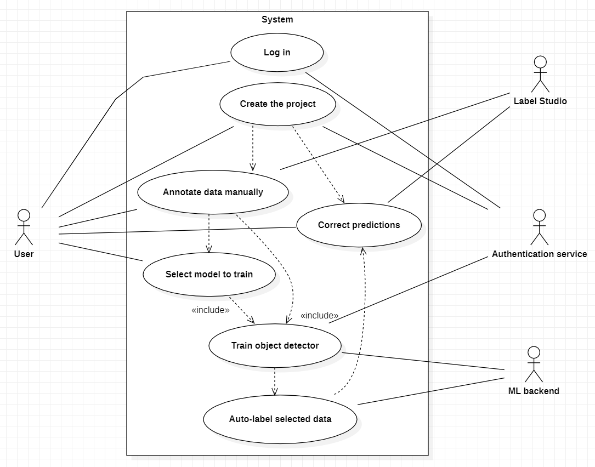
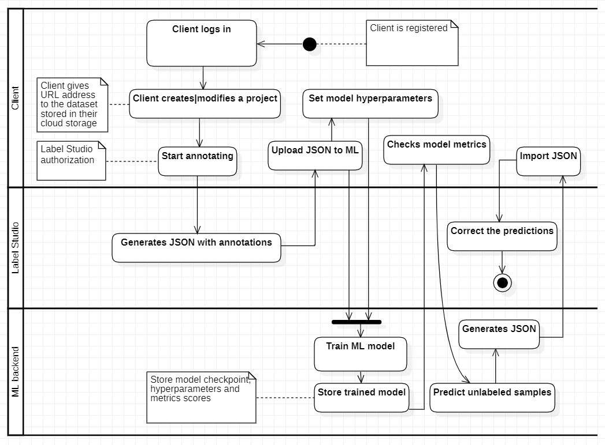
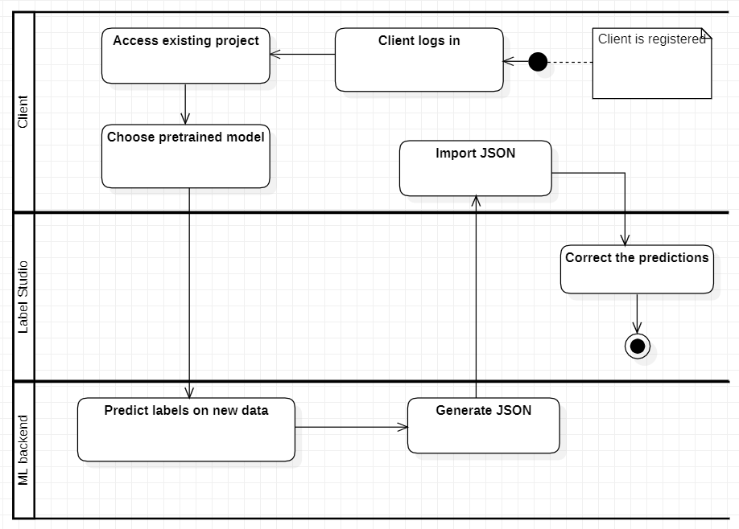

User Experience Design¶
Actors & User Stories¶
Employee of a Data Labeling Company¶
- Acceptance Criteria:
The user can create a new annotation project.
The user can easily switch between existing annotation projects.
Each project allows the definition of unique data categories and attributes.
- Acceptance Criteria:
The user can seamlessly switch between manual annotation and ML model prediction correction modes.
Changes made in one mode are reflected in the other to ensure consistency.
The transition between modes is intuitive and requires minimal effort.
- Acceptance Criteria:
The user can download annotated data in a standardized format (e.g., JSON).
The downloaded data includes all relevant annotations and metadata.
The downloaded data is compatible with common machine learning frameworks.
Academic Researcher Creating Specialized Dataset¶
- Acceptance Criteria:
The user can define custom data categories and attributes for their dataset.
The system validates the uniqueness and appropriateness of the defined categories.
Custom categories are accurately reflected in the annotation interface.
- Acceptance Criteria:
The user can create multiple versions of a dataset.
Each version retains a snapshot of the dataset, including annotations and metadata.
The user can easily switch between different versions for analysis and comparison.
- Acceptance Criteria:
The user can export the dataset along with annotations in a portable format.
The exported dataset retains all relevant metadata and annotations.
Collaborators can receive the exported dataset and integrate it into their own workflows for collaborative research.
ML Engineer Preparing Data for Modeling¶
- Acceptance Criteria:
The user can select from a variety of pre-trained model architectures.
Each model architecture provides relevant details, such as input requirements and supported tasks.
The selected model architecture can be seamlessly integrated into the annotation and training workflow.
- Acceptance Criteria:
The user can review model predictions for annotated data.
Predictions include bounding boxes or labels for identified objects.
The interface allows the user to easily navigate between annotated samples and associated predictions.
- Acceptance Criteria:
The user can save trained models along with associated hyperparameters.
Downloaded models are compatible with common machine learning frameworks.
The saved models can be easily integrated into deployment pipelines for further use.
Use Cases¶
Use Case 1: Create Annotation Project
- Basic Flow:
User accesses the dashboard.
User clicks “Create new project” button
The “Project Creation Pop-up” shows up
User has to input: Project Name, Description, Dataset URL
User clicks “Create Project”
If all the data was inputted correctly project is created and user receives notification that the “Project was created successfully”
Page get’s refreshed, and the project overview pop-up shows up
- Alternate Flows:
In point 6: If the data was invalid the user gets taken back to the point 4 - he needs to fix invalid data
- Exceptions:
In point 5: User decides not to create the project - he clicks the cancel button
In point 5: User decides not to create the project - he closes the whole page
- Basic Flow:
User accesses the dashboard.
User clicks on existing project
The “Project Overview Pop-up” shows up
User can click on any of the properties: name, description, dataset URL and modify them
After user made the changes, he clicks the “Modify” button
If all the changes were possible project is modify and user receives notification that the “Project was modified successfully”
User stays in the Pop-up window
- Alternate Flows:
In point 5: If the input was invalid changes are not saved, user gets notification and has to fix the issues, then he can return to point 5
- Exceptions:
In point 4: User decides not to modify the project - he clicks the cancel button, or he closes the whole page
- Basic Flow:
User accesses the dashboard.
User clicks on existing project
The “Project Overview Pop-up” shows up
User clicks on the “Delete Project” button
User needs to confirm it by typing “delete”
If the confirmation was successful project is deleted, user receives notification that the “Project was deleted successfully”
Page gets refreshed, and user is taken to the dashboard
- Alternate Flows:
If the confirmation was not successful in the first try, user can try until he succeeds
- Exceptions:
In point 5: User does not confirm the deletion process
- Basic Flow:
User accesses the ML models list.
User chooses the ML model
The “ML Model Overview Pop-up” shows up
User loads a .JSON file with training set annotations
User clicks the “Train Model” button
If all the data input was correct the training process will start, once it’s finished user gets a proper notification
The “Training results Pop-up” is shown, where user can save the model, and check its quality measures
- Alternate Flows:
Before point 5: User can adjust the model hyperparameters (check use case 5)
In point 6: Input was incorrect - user has to fix the issues first - then he can continue the training
- Exceptions:
In point 6: User decides not to train the model - closes the pop-up
In point 6: User can’t provide valid input - the training can’t be started
In point 7: Quality measures weren’t satisfying - user doesn’t save the model
- Basic Flow:
User clicks the “Adjust Hiperparameters” button
The field for hyperparameters configuration shows up
User inputs hyperparameters configuration code
User clicks “Save Configuration” button
If all the data was inputted correctly, configuration is saved and user receives notification: “Configuration saved”
User can start training now
- Alternate Flows:
In point 5: If the data was invalid the user has to fix the configuration before saving it
- Exceptions:
In point 4: User decides to stop - closes the pop-up
In point 4: User couldn’t input valid configuration
- Basic Flow:
User accesses the Label Studio Frontend module
User manually annotates the dataset in LSF
User downloads the .JSON file generated by LSF
- Alternate Flows:
User could potentially use any other offshore annotating tool that would generate right .JSON file
- Exceptions:
The exceptions handling is covered by LSF, we only provide it as an integrated module
- Basic Flow:
User accesses the ML Models List
User chooses the ML Model
User clicks “Predict Labels” button
If the action was viable the ML model starts predictions and user receives a notification “Predictions has started”
When the predictions are completed user receives a notification and the .JSON file gets generated
User can download the predictions by clicking “Download” button
- Alternate Flows:
There isn’t any, user has to follow basic flow
- Exceptions:
ML Model couldn’t generate the predictions due to an error
- Basic Flow:
User accesses the Label Studio Frontend
User uploads the .JSON file
User manually adjusts the labels
User downloads the corrected dataset labels as a .JSON file
- Alternate Flows:
User could potentially use any other offshore annotating tool that would generate right .JSON file
- Exceptions:
The exceptions handling is covered by LSF, we only provide it as an integrated module
Objects coverage by the use cases
Object / Use Case |
log in |
create project |
modify project |
delete project |
save project |
annotate manually |
conf. ML model |
train ML model |
predict labels |
correct annotations |
backend |
x |
x |
x |
x |
x |
|||||
Label Studio |
x |
x |
x |
|||||||
ML module |
x |
x |
||||||||
Database |
x |
Use case diagram:
{kind=link}
Screens / Views¶
Login
Dashboard, contains:
Header Navigation Bar
Overview of all projects. (Project List View)
Quick access to create a new project or continue existing ones.
Basic indicators for each listed project.
Create New Project Pop-up:
Form to define project details (name, description, etc.).
Field to input link to dataset
Project creation and cancel buttons
Project Overview Pop-up:
Change name/description
Go to Model List View
Go to Label Studio
Annotation Interface (Label Studio)
ML Models List
Display Current Project Name
List of available pre-trained model architectures.
Select From Models List
ML Model Overview Pop-up
Model details
Field for configuration code
Configure hyperparameters button
Upload training dataset
“Train Model” button
Training Results Pop-up:
Quality measurements
“Save model” button
“Close” button
‘Adjust Model” button
Activity Diagrams¶
Activity diagram for usage of new ML model:
{kind=link}
Activity diagram for usage of existing pretrained ML model for new data in dataset (existing projects):
{kind=link}